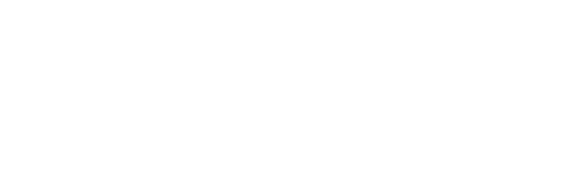
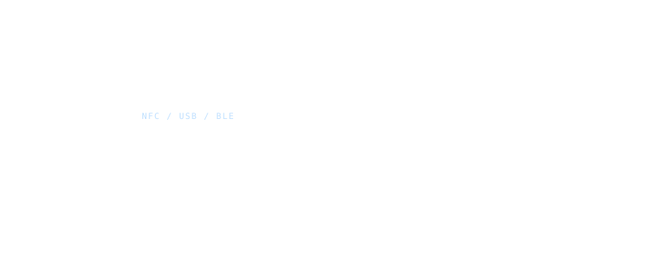

WHY THESE FOUR
The scores in the comparison table are not a review average. Each is a reading of one part of the device's architecture, taken from public datasheets, published firmware, certification reports and security-lab disclosures. Where a vendor claim cannot be verified, it is scored as if the property were absent.
Vulnerabilities are found every few months and vendors ship updates to close them. That cycle is normal and it is not what this site tracks. What it tracks is the smaller set of flaws that no firmware update can repair, because they are decisions made in silicon and board layout.
WHY A HARDWARE WALLET IS NEVER ALONE
The companion device is part of the threat model.
A hardware wallet is not a general-purpose computer, which is exactly what makes it resistant to malware — and also what stops it reaching the network by itself. It cannot fetch a balance, read transaction history, or broadcast a signed transaction. Every one of those operations is delegated to a companion: a phone or a laptop running a wallet app.

This is the whole reason the following properties matter. If the companion app is compromised, it can lie about the recipient address, lie about the amount, and suppress what you are shown. The device's only defence is what it can prove on its own hardware, without trusting anything the phone says. Many products sold as hardware wallets fail here: they lean on the security of the middle device rather than replacing the need to trust it.
THE TARGET ARCHITECTURE
One chip should own the secret, the screen and the buttons.
The ideal model is a secure element that drives all input and output itself, with no non-secure intermediate chip anywhere in the signing path and no reliance on the phone or computer. Everything below is a measurement of how far a given device sits from this diagram.

SCORING
Every property is scored out of ten. Each score is a sum of the components listed in that property’s tab, not an overall impression. A four on trusted I/O is not a judgement that the device is mediocre; it means the screen and the buttons are driven by the device’s own microcontroller and the host link runs through a general-purpose chip. Each device’s expanded row on the comparison sheet shows that arithmetic, component by component, with a source against each one. The composite is an unweighted mean of the four, rounded to one decimal — published because people want one number, and left unweighted because the right weighting across properties is your threat model and not ours. Weighting within a property is a different question: how much of the open-source score each layer earns is a fact about the architecture rather than a preference, since code running closer to the seed is code more worth being able to read, whatever you are defending against.
01 — SECURE ELEMENT
The question is not whether there is one. It is how much of the wallet runs inside it.
A general-purpose microcontroller stores your seed in flash that a skilled attacker with physical access can often extract — through voltage glitching, decapping, or a debug interface someone forgot to fuse off. A secure element is purpose-built against exactly that: hardened memory, active shielding, glitch and fault detection, and no path that returns key material to the outside world.
Almost every device on this sheet now has one. That is why the question has moved. Vendors fit an element, put the PIN behind it, and then carry the seed out to an ordinary chip to do the actual work — so the marketing is true and the protection is thin. What matters is how much of the wallet runs inside the element and how much runs beside it, so the ten points are split across the four things a wallet does with your key. A device with no element at all scores zero, because every one of the four fails on its own terms.
The middle two are the heart of it. A device that generates the seed on a general-purpose chip has exposed it before the element ever sees it; a device that carries the seed back out to sign exposes it on every spend. Trezor’s Safe line and ColdCard both sit here — the element gates the PIN and holds a decryption key, and an ordinary STM32 does the signing. Malware on that chip, planted through a supply chain or a firmware flaw, reads the seed straight out of memory.
The last component is the one most often overlooked. An element that signs whatever hash arrives at its door is only as trustworthy as whatever computed that hash. If the transaction is parsed and hashed outside, the element is a signing oracle rather than a wallet, and the thing deciding what you sign is the chip you were trying not to trust.
Having an element is also not the same as using it honestly. CoolWallet S held an element with a top-tier certification and still stored its password and seed in plaintext in the mobile app, which Kraken Security Labs found and reported. A system is only as strong as its weakest component, and the element does not make the rest of the device disappear.
02 — TRUSTED I/O
What you see must be what you sign, and consent must be physical.
This property asks one question about three components: which chip drives the screen, which chip reads the buttons, and which chip talks to the host. Four points ride on the display, four on the input, and two on the host link.
Assume the computer is hostile. The only defence left is a display the host cannot influence, driven by the domain that holds the key, rendering the address and amount the device is actually about to authorise. If a companion app can put pixels on that screen, the screen proves nothing. A screen that truncates a destination address to a handful of characters invites address-substitution malware to brute-force a convincing lookalike; one that cannot render a full contract call is, for smart-contract use, a step from blind signing.
Consent is the same problem in the other direction. A confirmation is only meaningful if software cannot produce it: buttons or a touch controller wired to the secure domain, a signing step that cannot be batched away by an earlier approval, and a PIN entered on the device rather than typed into a host that may be logging it.
Screen and buttons were scored separately here until now, which was a distinction without a difference — they fail together and for the same reason. What decides both is which chip is driving them, and the middle level is a real one: a screen driven by the device’s own microcontroller can still be lied to by malware on that chip, but that is not the same failure as having no screen at all, where the only thing you can read is a phone that may already be compromised.
Display and user output
Buttons and user input
Host link — USB, Bluetooth or NFC — the one component with no middle level: either a general-purpose chip sits in that path or nothing does. The top two score the same because they achieve the same thing, no general-purpose chip between the host and the domain holding your key — one removes the hub by absorbing it into the element, the other by having no link at all.
Why the hub is the problem.
Terminating screen, buttons and host connection at the element is a genuinely hard engineering problem: elements are resource-constrained and often lack the pins to drive connectors. The common workaround is a microcontroller acting as a hub — driving the display, reading the buttons, then talking to the element. That hub is a new place to hide. A manipulated MCU can show you one address while handing a different transaction to the element to sign, which is precisely the shape of a supply-chain attack and why every vendor in this category tells you to buy direct. Ledger Nano S is the worked example: a ST31 element paired with an STM32, and Thomas Roth demonstrated at CCC that the MCU could be overwritten — he loaded a game onto it.
The strongest designs remove the hub rather than harden it. Ledger’s later devices move to an element with enough I/O to take the display driver and button handling inside, which makes manipulating what is shown, or faking a press, substantially harder. An MCU remains for USB and Bluetooth, and that remnant has already been shown to matter: on the Nano X, Kraken Security Labs found a debug interface left enabled that let the MCU code be overwritten before the device reached the buyer, after which it could blank the display and try to talk the user into approving a transaction. Ledger patched it in firmware 1.2.4-2; the element itself was never reached.
Removing it entirely is not hypothetical. ICCD is a USB stack written for secure elements and already shipping on smart cards, running the USB code on the element with no intermediary. NFC is supported by many elements, needs no battery, is more secure than Bluetooth, and already carries card payments on both iPhone and Android. The pieces exist; the last two points are there for whoever assembles them.
03 — ENTROPY
A predictable seed is no seed at all.
Every key in the device descends from one number generated once, usually in the first minute of the device’s life. If that number is weak, every other control on this sheet is decoration — the screen, the buttons and the element are all guarding a secret an attacker can simply recompute.
Two questions decide it: what the randomness comes from, and how many sources are combined. They are worth five points each and scored separately, because a device can do well at one and badly at the other. Where the seed is generated is scored under secure element, and whether the mixing code can be read is scored under open source; neither is re-scored here. The floor is one point per rule rather than zero, because a device that generates a number badly has still generated one — so the worst score available is two, and no device that leaves the user out of the process can exceed eight.
Rule one — what the randomness comes from.
The certification has to cover the generator, not merely the chip it sits in. Several wallets cite a Common Criteria level whose evaluated scope leaves the random generator out entirely, and a datasheet asserting conformance is not a certificate — the difference between the two is most of what separates five points from three.
Rule two — how many sources are combined.
User-contributed entropy is the only item on this page that protects you when the vendor is the problem. A certified generator is worth having, but you cannot inspect it, cannot test it, and cannot tell a healthy one from a backdoored one by looking at the output. Roll your own dice into the mix and a compromised generator no longer decides your seed on its own. We are strict about what counts: the entropy must be contributed at generation time and mixed into the seed — a passphrase applied afterwards is a different mechanism with different properties, and it does not earn this point.
04 — OPEN SOURCE
Openness is not a security property. It is what lets you check the other three.
Open firmware is not automatically reviewed firmware, and a closed secure-element applet can be excellent. What openness buys is verification: if the signing firmware is published and the build is reproducible, the binary on your device can be shown to match the code people have actually read.
The trade-off is real in both directions. Trezor chose open source over a secure element and paid for it in extractable seeds. Ledger runs certified silicon but keeps the secure-element firmware closed under an NDA with its supplier — and while BOLOS is a genuine contribution, the critical component sits behind that wall. Reverse engineering is slow and unrewarding, so researchers mostly do not do it; a sufficiently motivated attacker will. A reasonable middle path is to separate the low-level modules that talk directly to the element from the high-level ones and open the latter, shrinking the closed surface to the part that genuinely cannot be published.
Not all published code is worth the same.
Treating openness as one bit is useless, because it lets a vendor publish a phone app and a marketing schematic while the code that touches your seed stays closed — and then describe the product as open source. So the score is split into four layers, each weighted by how close it sits to the secret. The weights total ten, so a layer’s weight is the number of points it can earn: a vendor whose only open component is its host software cannot score above 2.0, however loudly the box says open source, while the code that holds your key is worth four points on its own. Because every layer exists for every device, no score is ever rescaled and every total lands on the same grid.
The heaviest layer names a role rather than a component, and that matters. Asking “is the secure element firmware published?” has no answer for a wallet with no element, and flatters one whose element is closed but never touches the seed anyway. Asking “can you read the code that holds and uses your key?” always has an answer — for some devices that code runs on the element, for others on an ordinary microcontroller, and the question is the same either way.
Three levels, and no credit for good intentions.
Each layer earns a share of its own weight, so the same level is worth more where it matters more. The seed-touching layer, carrying four points, earns 4.0 when that code is published and reproducible, 2.0 when it is merely published, and nothing when it is closed; the same three levels applied to host software move the total by at most two.
What is scored is whether an independent rebuild is possible, not whether someone has already done one: the complete procedure and every input it needs must be public. A build that depends on a withheld library, links a closed prebuilt library nobody outside the supplier can rebuild — a chip maker’s radio stack, say — or has no documented way to match the release, stays at the middle level however the vendor describes it. Where an outside party has published a matching rebuild, the device’s expanded row cites it.
Closed, NDA-bound and unverified all land on that bottom level, because a claim that cannot be verified is scored as absent everywhere else on this sheet. They are labelled differently in each device’s expanded row all the same. Closed is a decision. NDA-bound is a constraint the vendor may not control — the case Ledger makes about its element supplier. Unverified is a gap in our sourcing rather than a finding about the product, and it is an invitation to send us a link.
What the levels mean for a board.
Reproducibility is a property of software: you rebuild from source and compare the result against the binary you were shipped. A circuit board has no build to repeat and no binary to compare — short of destroying the device, you cannot verify that the board in your hand matches the design you were shown. So the three levels are read differently for hardware, and the top one is labelled fabricable rather than reproducible.
Nothing is exempt.
Every device on this sheet has code that touches its key, a bootloader, a board and host software of some kind — so every layer is scored for every device and no total is ever rescaled to compensate for a missing one. Where a vendor ships no companion app, the layer is scored on the third-party software you are obliged to use instead. Where a device is assembled from commodity parts rather than a designed board, the layer is scored on how completely that assembly is documented and on whether the parts themselves are open.
One consequence is worth stating plainly: a wallet whose element is closed can still score full marks here if the element never touches the seed, because then the code you need to read is the device firmware. That is not a loophole. If the key lives on an ordinary microcontroller, the firmware on that microcontroller is exactly what you should be able to audit — and the wallet will already have been marked down for it in the secure element score.